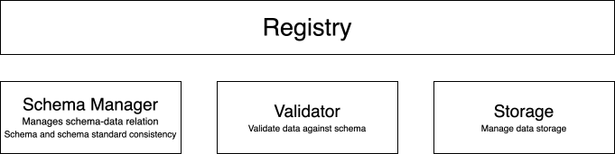

Welcome to Sweet Validation
Sweet Validation is package to perform data validation within the Sweet CoSi project. To perform validation, the package relies on a description of data tables using yaml or json files. Data items are checked against the description provided in these files.
Overview
Our approach relies on a Registry that manages the schemas and its relations to data.

The registry relies on three main components:
- SchemaManager stores schemas that are used to validate data. The manager keeps track of the relation between schemas and data and also validates new schemas against the imposed meta-data standard.
- Validators provide methods to validate data against a given schema.
- FileStorage provides the methods to persist and retrieve data.
Using validators, the registry coordinates the actions between the SchemaManager and the FileStorage ensuring that no data are saved or updated without validation.
Installation
tbd